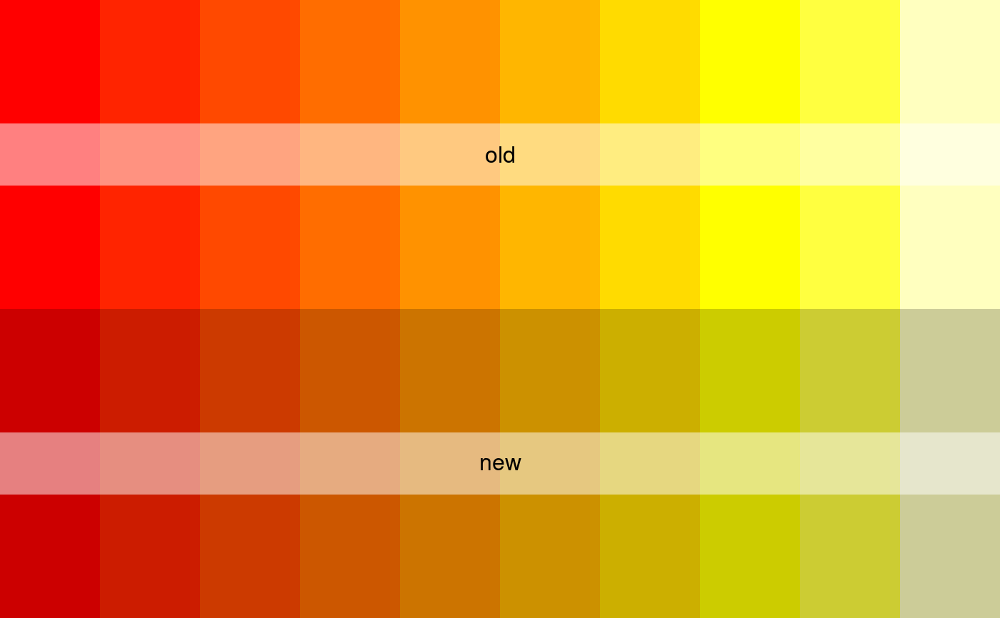

Adjusts a given colour by lightening or darkening it by the specified amount
(relative scale of -1 to 1). Adjustments are made in RGB space, for
limitations of which see ?convertColor
adjust_colours(cols, adj = 0, plot = FALSE)
| cols | A vector of |
|---|---|
| adj | A number between -1 and 1 determining how much to lighten (positive values) or darken (negative values) the colours. |
| plot | If |
Corresponding vector of adjusted colours (as hexadecimal strings).
osm_structures, ?col2rgb.
cols <- adjust_colours (cols = heat.colors (10), adj = -0.2, plot = TRUE)# 'adjust_colours' also offers an easy way to adjust the default colour # schemes provided by 'osm_structures'. The following lines darken the # highway colour of the 'light' colour scheme by 20% structures <- osm_structures (structures = c('building', 'highway', 'park'), col_scheme = 'light') structures$cols [2] <- adjust_colours (structures$cols [2], adj = -0.2) # Plot these structures: bbox <- get_bbox (c (-0.13, 51.5, -0.11, 51.52)) not_run({ dat_B <- extract_osm_objects (value = 'building', bbox = bbox) dat_H <- extract_osm_objects (value = 'highway', bbox = bbox) dat_P <- extract_osm_objects (value = 'park', bbox = bbox) }) # These data are also included in the 'london' data of 'osmplotr' osm_data <- list (dat_B = london$dat_BNR, dat_H = london$dat_HP, dat_P = london$dat_P) dat <- make_osm_map (structures = structures, osm_data = osm_data, bbox = bbox) print_osm_map (dat$map)